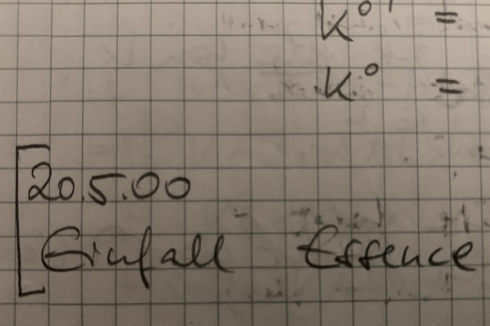

Essence
Creation of Essence
The idea of Essence first struck me on 20 May 2000. It was a distinct enough event that I made a laconic diary entry and took the rest of the day off. I was supposed to prepare for an exam, if I remember correctly. I knew immediately that I would see this to the end. I guessed it would take five to ten years.
In the years that followed, the work never quite stopped. Ideas came and went, and only when they became stable enough did I enter periods of intense writing activity. These were followed by long stretches where things were only simmering in my head or where my mind was in entirely different places.
This timeline shows the years I can document from notes and drafts.

2000
- Essence / Accidence
- The ID
- Accidence as money
- Three friends
- First description of the inversion scene
- Ludiqi / Traffic (the games, but not yet the names)
- The role of dreams
2001
- Tim’s character describes Ludiqi (both character and game had different names then)
2002
- Tim’s character approaches the house over the creek
- The mezzanine
2007First prose in English
- Monetary theory of Accidence
- The temple mountain
- Ipsysaxips
2008
- DS
- Rachel at the house mezzanine
- Discussion of inversion
2015English only from here on
- Artists’ circle / Kenneth’s fjord
- Rachel’s reality education
- Navigation theme
- Kenneth’s disappearance
- First versions of the closing chant
2016Several voices instead of Tim as the single narrator
2019
- Local stochastic parallelism
- Ending: Rachel and Thor describe Tim’s death
- Thor as a character
- More dreams
- Alternative narratives
- House mezzanine infiltration for the stones
2024Turning point. Two realizations:All elements are there, either on 70 A4 pages of draft or in my head.The last threshold is lowered: that I am not a native speaker can be mitigated with AI.
2024–2025The push to write
- Graduation
- Thor’s and Ben’s stories
- Yves / Yvonne
- Rachel’s career
- The sting
- The Caroline voyage
- Time slippage
2025–2026Test readers
Edits and consistency checks
Translation back to German
The paintings
Edits and consistency checks
Translation back to German
The paintings